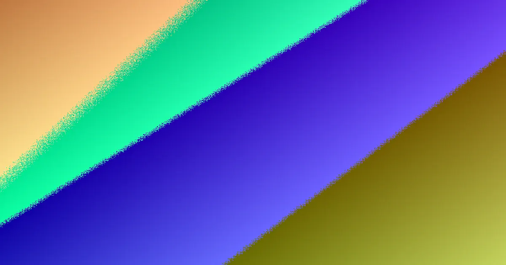

Selecting fencing services in Noosa hinges on boundary position, material suitability, site exposure, and compliance needs like pool barriers or rural scopes. Key considerations include the fence line, exposure to coastal elements, neighbour agreements, and specific requirements for privacy, airflow, or street presentation. Understanding material options like Colorbond, timber, aluminium slat, and rural fencing, alongside compliance with Queensland's dividing fence legislation, is crucial for a successful project.
For local buyers, fencing services noosa understanding the practical considerations before obtaining a quote.
Fencing Services Noosa Explained
When engaging fencing services in Noosa, the initial step involves clarifying the fence line, identifying any existing structures, and gathering details about materials and site access. This approach is vital because a fence in a sheltered residential area presents different quoting challenges compared to a beachfront property exposed to salt air and wind, or a hinterland location where rural fencing requirements may be relevant. The primary function of the fence should be established early on. Factors such as privacy, airflow, aesthetic appeal, pool safety compliance, and boundary definition will guide the selection of appropriate materials and heights. A request that only specifies the fence length may overlook critical details affecting posts, footings, gates, and the removal of old fencing.
It is important to mark the location of the existing fence and determine if the new fence line will be shared with a neighbour. Note any potential obstacles to removal, such as old posts, concrete, or dense vegetation, as well as any access limitations. Differentiate between scopes for boundary fencing, pool barriers, front screens, rural fencing, and gates. Clarify whether the removal and disposal of old fencing, along with any necessary site restoration, are included in the service.
Material Choice Based on Exposure
The Noosa region's fencing guidance distinguishes between coastal and hinterland environments. Colorbond and aluminium slat fencing are recommended for the salt-laden air and strong winds prevalent along the beachfront from Noosa Heads to Marcoola. Timber fencing is suggested for established streets in the hinterland and is often suitable for shared dividing fences. Rural fencing is specified for paddock and acreage boundaries in areas like Doonan, Eumundi, and Kin Kin. These are general recommendations, and the final choice depends on specific needs.
For instance, a front screen might prioritise street appeal and airflow, while a rear boundary may require enhanced privacy and neighbourly agreement. Acreage fencing might focus more on durability, length, and ease of access rather than a refined finish. Pool barriers fall under a distinct safety category with specific compliance requirements. It is advisable to ask contractors to detail the post specifications, footing assumptions, and gate arrangements for the exact fence run. Comparing quotes requires ensuring that all aspects, including exposure, access, and removal considerations, are consistently addressed, even if the same material is proposed.
Who This Guide Is For
This guide is intended for property owners who need to define the scope of their fencing project before seeking formal quotes. It is particularly beneficial for projects involving shared boundaries, coastal exposure, pool areas, front screens, driveway gates, or rural boundaries. Homeowners who already have a surveyed line, a chosen material, confirmed neighbour consent, and a detailed scope may find it less applicable.
For residents comparing fencing contractors in Noosa, the key difference often lies in the questions asked during the initial consultation and site assessment. Inquiries about existing fencing, site access, desired height, the presence of retaining walls, proximity to pools, and potential gate automation can transform a vague request into a clear, actionable quote. Corner blocks and retaining walls warrant early attention, as sight lines and combined heights can influence approval processes. Pool barriers must be treated separately from standard boundary fences due to their unique safety regulations and inspection protocols, which are confirmed by a licensed pool safety inspector.
Boundary and Compliance Checks
Constructing a shared fence involves both building decisions and neighbourly communication. Queensland's Neighbourhood Disputes (Dividing Fences and Trees) Act 2011 provides a framework for adjoining owners planning a sufficient dividing fence. If one owner desires a fence exceeding the 'sufficient' standard, such as using premium materials, a greater height, or a specific finish, they are responsible for the additional cost. Before finalising any agreement, property owners should document the proposed work and obtain at least one quote.
If discussions with a neighbour do not resolve the matter, a formal notice to contribute can be issued. The Act stipulates a one-month period for reaching an agreement following the notice, with a potential application to the Queensland Civil and Administrative Tribunal (QCAT) within two months. These timelines are general guidelines and not legal advice. It is essential to maintain clear records of quotes, scopes, and assumptions to ensure both parties understand the proposal and any associated upgrade costs beyond a sufficient dividing fence.
Reading a Quote Effectively
While a per-metre rate can be useful for initial planning, the Noosa guide highlights that it represents only one component of the overall cost and does not fully capture the site's complexities. Factors such as ground conditions, exposure to elements, corners, returns, gates, difficult access points, and the removal of existing structures can significantly impact the final price. Ground types like coastal sand, riverfront alluvium, and hinterland clay affect how posts are installed and secured.
A comprehensive quote should clearly outline the project scope. Look for details on materials, height, total fence length, post and footing specifications, gate details, removal and disposal services, and any access constraints or exclusions. If a quote is based solely on a working rate, it is important to clarify assumptions made about the existing fence, soil conditions, site returns, and access. The guide also suggests treating estimates as preliminary planning tools rather than fixed offers or site measurements, primarily serving to generate pertinent questions for the contractor.
- Define the Fence Line. Clearly mark the proposed fence line, noting its position relative to boundaries and any existing structures.
- Assess Site Conditions. Evaluate exposure to coastal elements, soil type for post stability, and any access challenges for machinery and materials.
- Determine Fence Purpose. Identify the primary function: privacy, security, pool safety, boundary definition, or aesthetic enhancement.
- Select Materials. Choose materials like Colorbond, timber, aluminium, or rural fencing based on durability, aesthetics, and environmental suitability.
- Clarify Scope and Quote. Ensure quotes detail materials, height, posts, footings, gates, removal, disposal, and site restoration. Compare quotes thoroughly.
Common questions
What are the main considerations for fencing services in Noosa? Key factors include the fence line's location, exposure to coastal conditions, neighbour agreements, and specific requirements like pool safety or rural boundaries. Material choice, privacy needs, and street presentation also play significant roles.
How does coastal exposure affect material choice for fences in Noosa? Coastal areas like Noosa Heads and Marcoola benefit from materials resistant to salt air and wind, such as Colorbond and aluminium slat fencing. Timber is often better suited for less exposed hinterland areas.
What is the process for shared dividing fences in Queensland? Queensland's legislation allows one month for agreement after notice is given to a neighbour. If agreement isn't reached, a QCAT application can be made within two months. Owners seeking upgrades beyond a 'sufficient' fence typically cover the extra cost.
Fencing services in Noosa for property owners.